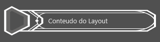
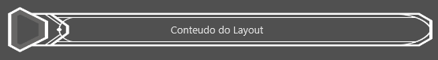
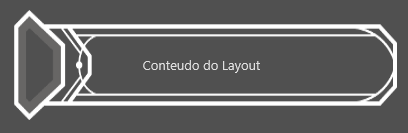

3 - Frame com 2 partes fixas e 1 parte que se estica
Frame - Background com 2 partes fixas e uma parte que se estica
Dada a seguinte imagem (header0_smaller.png) de tamanho 468x100:
Criamos um frame que se escala na vertical (autoScaleY = true) e que possui 3 partes:
- A parte da esquerda, âncora à esquerda, desenha uma porção da imagem (um retângulo de 84x100)
- A parte da direita, âncora à direita, desenha uma outra porção da imagem (um retângulo 40x100)
- A parte central, âncora à esquerda e à direita, desenha uma outra porção da imagem (um retângulo 341x100) de forma esticada.
| \<?xml version="1.0" encoding="UTF-8"?> \<frame width="468" height="100" autoScaleY="true"> \<borders left="12" top="24" bottom="24" right="20" /> \<draw> \<!-- Parte Esquerda (FIXA) --> \<image left="0" top="0" right="84" bottom="100"zOrder="0"> \<anchors left="true" top="true" bottom="true"/> \<source url="header0_smaller.png" left="0" right="84" top="0" bottom="100"/> \</image> \<!-- Parte Direita (FIXA) --> \<image left="425" top="0" right="468" bottom="100" zOrder="0"> \<anchors left="false" top="true" bottom="true" right="true"/> \<source url="header0_smaller.png" left="425" right="468" top="0" bottom="100"/> \</image> \<!-- Parte Central (ESTICA) --> \<image left="84" top="0" right="425" bottom="100" overflowX="stretch" overflowY="stretch" zOrder="-1"> \<anchors left="true" top="true" bottom="true" right="true"/> \<source url="header0_smaller.png" left="84" right="425" top="0" bottom="100"/> \</image> \</draw> \</frame> |
|---|
\
 \

Created with the Personal Edition of HelpNDoc: Transform Your CHM Help File Creation Process with HelpNDoc